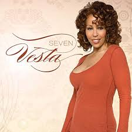

Mary Vesta Williams (December 1, 1957 – September 22, 2011[2]) was an American singer-songwriter, who performed across genres such as pop, jazz, adult contemporary and R&B. Originally credited as Vesta Williams, she was simply known as Vesta beginning in the 1990s.[3] She was known for her four–octave vocal range.[4][5] She once sang "The Star-Spangled Banner" for the Los Angeles Lakers game opener using all four of those octaves. Although Williams never had any albums certified gold nor any Top 40 hits on the Billboard Hot 100, she scored six Top 10 hits on the United States Billboard R&B chart from the mid–1980s to the early–1990s that included "Once Bitten, Twice Shy" (1986), "Sweet Sweet Love" (1988), "Special" (1991), and her 1989 single and signature song,[6] "Congratulations".[7]
Vesta Williams started her career singing for Bobby Womack, Jeffrey Osborne, Anita Baker, Sting, and most notably Chaka Khan. The similarities in Vesta and Chaka’s tone and style are immediately noticeable, and rumors persist that Vesta actually laid some of Chaka’s session vocals in later recordings.
Vesta also complained to Donnie, as Phyllis did, about the focal shift from vocal talent to production.
Vesta and Phyllis’s frustrations – which are still echoed today by singers who possess wide range, power, and vocal control, but can’t get their careers off the ground – were valid. Vesta’s voice was transcendent without even singing lyrics.